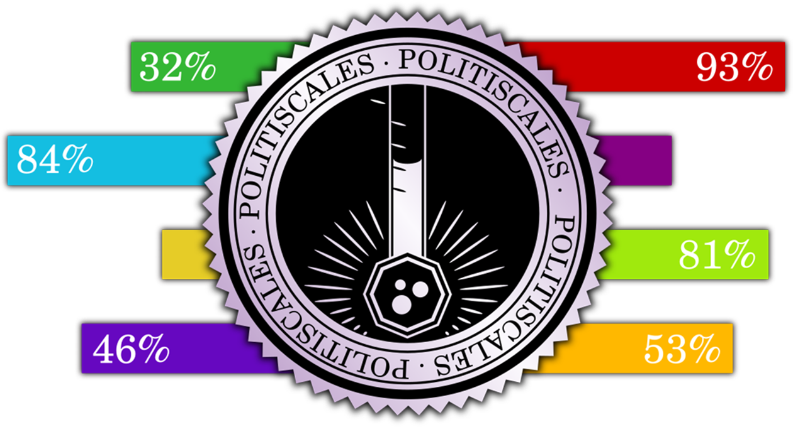

Introdução
Bem-vindo a PolitiScales, o teste político que o coloca no quadro político. Será confrontado com uma série de declarações. Para cada um deles, clique no botão correspondente à sua opinião.
As perguntas assumem que é um cidadão de uma nação com um sistema político multipartidário e uma economia de mercado. Mas se não for este o caso, este teste ainda pode ser fiável para uma grande maioria das respostas.
Se não compreender o significado de uma pergunta, tente fazer alguma pesquisa na Internet para compreender melhor o seu significado. Não coloque uma resposta de forma aleatória, de modo a não distorcer o resultado.
Este teste procura representar o maior leque de opiniões possível e, por conseguinte, contém frases que podem chocá-lo, particularmente no que diz respeito ao racismo e à homofobia.